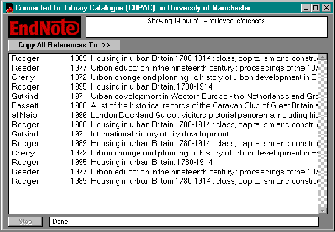

EndNote. Windows/MAC version 3.0 Berkeley, CA: Niles Software Inc., 1998. CD-ROM, Manual (Endnote:...bibliographies made easy.) xiv, 418pp. Price $299 (US Students $99.95; volume discounts available.) [Available in the UK from Cherwell Scientific Publishing, Ltd., The Magdalen Centre, Oxford Science Park, Oxford, OX4 4GA UK]It is a relatively short time since EndNote 2.5 was published, together with the downloading package EndLink, and, as a review of 2.5 can be found at this site, we shall focus on the significant changes that have taken place in version 3.0 The major change and a highly significant one is that EndNote now has the ability to interact directly with information sources that implement the Z39.50 information retrieval protocol, and allows the result of a search to be downloaded directly into an EndNote database. With version 2.5 to references had to be downloaded into a separate file and then imported into EndNote. EndNote accomplishes this trick through the use of connection files, which provide the essential information required by the protocol to make the connection. Thus, the connection file for the COPAC database has the following elements (kindly made available by another reviewer of EndNote 3.0, Dr. Michael Fraser :
For commercial databases user IDs and passwords are needed in addition. Niles provides more than 100 connection files as part of the package and new ones may be added as users acquire the necessary information. More connection files are being made available at the Niles Web-site but, so far, there are very few available for sources outside the USA. Once you have a connection file, the process of downloading is simple: once on the Internet, you simply click on Connect… on the File menu, select the appropriate connection file, and click on the file name. When the connection is made, you are presented with a search screen which, as you can see from the screen shot, allows you a degree of Boolean combinations and the ability to specify the part of the record in which the terms should appear. Thus, searching the COPAC file for "urban", "history" and "Britain" in the Title field produced 14 records, which were then transferred to a new EndNote bibliography file. The fields in the original record are automatically assigned to the appropriate EndNote field for the document type. As a result, you may get more information than you normally record in your bibliography, but it is a straightforward matter to cut out unwanted data from the record. The amount of editing that records need after transfer to EndNote depends the fields in the original source and their contents. Records downloaded from the Library of Congress catalogue often have curious combinations of elements in the Author field; for example:
Presumably this is because the Library of Congress treats the bodies listed as secondary authors of the texts. Different types of documents must be appropriately identified in the original database if they are to be correctly entered into an EndNote library. If experience of MELVYL, the Library of Congress Catalogue and the COPAC catalogue is to be the guide, it seems that most on-line catalogues do not properly identify their contents for EndNote's purposes. Thus, a conference proceedings is not recognized and, instead, the ordinary Book style is used for the description, as in the case of:
With the result that the editors are listed as authors, along with the University of Winnipeg. Similarly, The central Y.M.C.A. schools of Chicago; a study in urban history, by Frederick Roger Dunn. University of Chicago, 1940. is not recognized as a thesis. These may not be particularly troublesome issues in a download of up to, say 100 items, but, beyond that, the editing process could become rather tedious (although, it has to be said, rather less so than inputting the entire file by hand!) and, indeed, some of the information required by the style (such as the academic department in which a thesis was presented) may not be available in the original record. A little more troublesome is the fact that it appears to be impossible to run a second search while still connected - unless I am doing somthing entirely inappropriate - all that happens is that a "no records" message appears, in circumstances where records must actually exist and when re-activating the connection process reveals them. I reported this to Niles, as a beta-version user and they could not replicate the problem, so, I tried again and, this time, experienced no difficulty: I guess it must have been the result of one of those strange telecommunications glitches that tend to happen. The remaining new features are relatively minor and in one case (that of the ability to publish bibliographies on the Web) already available through a download from the Niles site. The new features include compatibility for ClarisWorks for the Mac and an add-in for MS Word 98 for the Mac: these are features that correspondents to the mailing list (endnote-interest@niles.com) have been asking for for some time and will be welcome to Mac users) Another feature, the new Electronic Source reference type will definitely be welcomed, and I suspect that many users will have produced their own (as I have) by converting an otherwise little-used reference type. The only point I would argue about in relation to this new type is positioning the URL right at the end: logically, it replaces the City and Publisher fields in a book reference and ought to be up there at the beginning of the form. As you might have expected you can also launch a web browser directly from a record and, so, electronic, remote documents can become part of your bibliography. Of course, in spite of the improvements and developments, the users of EndNote remain difficult to please, as the current debate on the mailing list (endnote-interest@niles.com) suggests. In particular there is a reiteration of the demand for bibliographic styles that satisfy the humanist. EndNote was designed originally for the medical and scientific literature and its ways of enabling citations and references have been formed by its origins: this does not satisfy the historian or others who work in the humanities, where the citation practices are very different. Niles must address this issue soon, otherwise other bibliography packages are going to fill the gap and take the market. The mailing list is a very useful source of information and provides an ideal way of making contact with others who are experiencing the same problems. Niles assures list members that the needs and wants are monitored and that, eventually, they will be satisfied. However, I think that users of EndNote must realise that Niles Software is a business and that the software business lives on upgrades: we cannot expect to see all of the desired improvements in the next manifestation of the packages (3.01?), but I would lay bets that it is already under development and that ways of keeping the humanists happy are high on the agenda. For those who like the technical bits: EndNote 3.0 needs Windows 3.1 or higher, or 95, or NT with 8 Mb of RAM and 5.5 Mb of hard disc space - and a CD-ROM drive for installing; on the Mac it needs System 6.0.7 or higher and 770Kb of free RAM. Professor Tom Wilson |